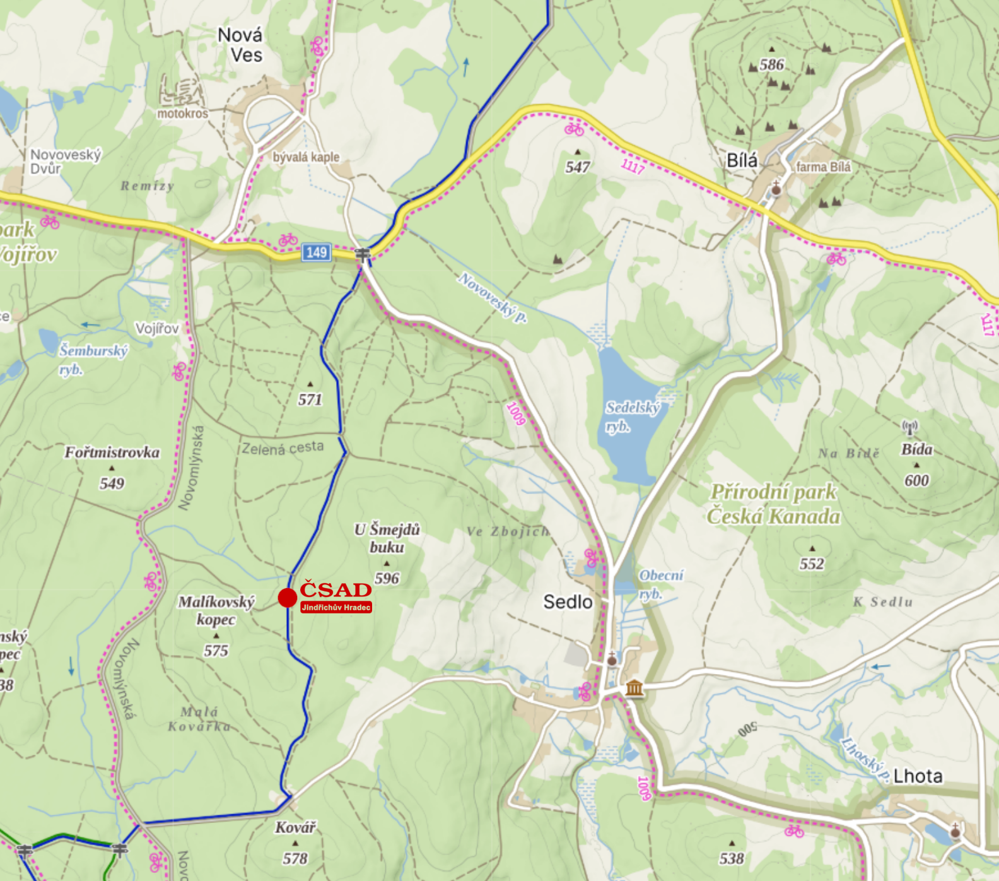

Do Prahy snadno, pohodlně a bez starostí
Vyrazte s námi z Jindřichohradecka do Prahy. Moderní dálkové autobusy, rozumné časy, férové ceny a řidiči, kteří to znají.
Wi-Fi* a USB*
Zásuvky*
Klimatizace
Čitelné jízdné
* Vybavení dle konkrétního vozu a linky.
Proč jet autobusem do Prahy?
- Bez přestupů na vybraných spojích, s přestupem výhodně přes J. Hradec.
- Dojezd na metro (Praha–Roztyly / Florenc dle spoje).
- Jdete hned z autobusu rovnou do města — bez parkování a kolon.
„Za dvě hodinky v Praze, notebook nabitý, kafe dopité. V autě se mi tohle nepovede.“
Vybrané páteční odjezdy — směr Praha
| Zastávka |
05:45 |
09:00 |
14:15 |
| Sedlo | 05:45 | 09:00 | 14:15 |
| Jindřichův Hradec (aut. nádr.) | 06:10 | 09:25 | 14:40 |
| Tábor | 07:25 | 10:40 | 15:55 |
| Praha (Roztyly / Florenc) | 09:50 | 13:40 | 19:00 |
Časy demonstrativní. Ověřte v aktuálním jízdním řádu dopravce před cestou.
Cenové příklady & slevy
Sedlo → Praha
od 199 Kč (online)
J. Hradec → Praha
od 169 Kč (online)
Slevy
Student / Senior / Dítě — dle tarifu
Ceny orientační. Finální jízdné dle platného tarifu a obsazenosti.

Tipy na cestu
- Doražte 10 min. před odjezdem, ať v klidu nastoupíte.
- Lehké zavazadlo do kabiny, kufry do zavazadlového prostoru.
- V Praze sledujte navazující MHD (metro C Roztyly / B Florenc).
- V případě dotazů volejte na infolinku: +420 384 371 911
- Pro aktuální jízdní řád a rezervace navštivte www.csad-jh.cz.